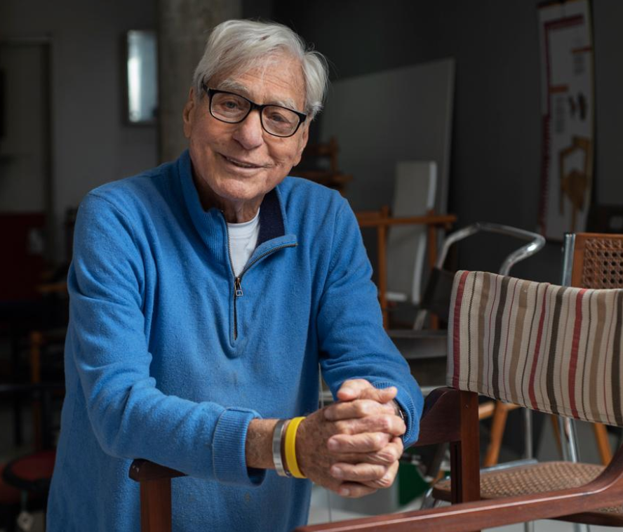
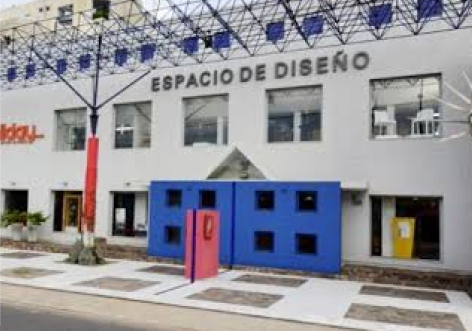
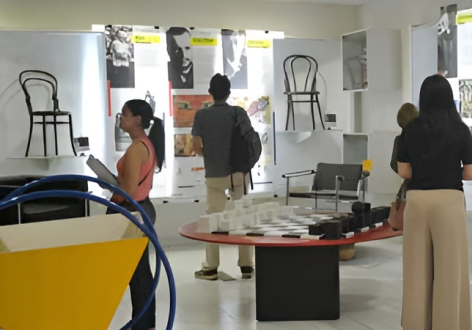
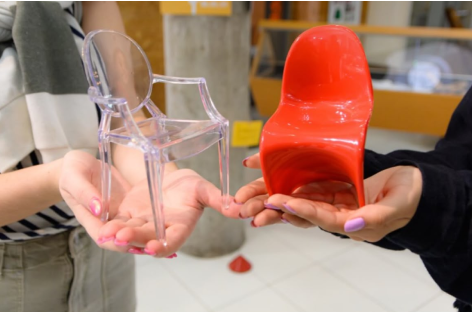
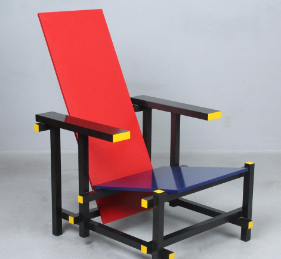
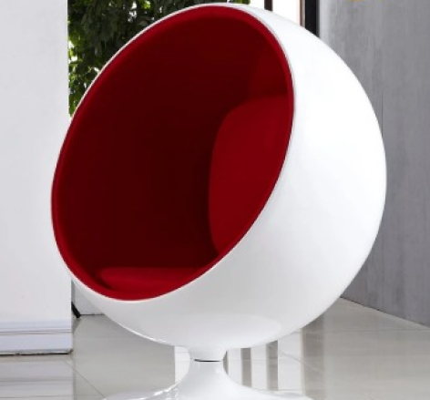
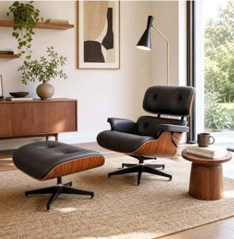

El MUSA abrió sus puertas el 6 de marzo de 2013 con apenas 300 sillas y el empeño del arquitecto argentino Jorge Jury, quien desde pequeño había sentido interés y afecto por estos objetos que le recordaban la historia de su familia. Dedicado al diseño, la historia y la funcionalidad de uno de los objetos más cotidianos, el Museo de Sillas expone una colección única de piezas de distintas épocas, estilos y materiales. Es un espacio singular que invita a reflexionar sobre la cultura material y la creatividad aplicada al mobiliario.

Detrás de ese escenario se encuentra su gestor y fundador, el arquitecto argentino Jorge Jury, quien llegó a nuestro país hace 52 años y encontró un hogar. Hombre de fuertes convicciones y un decir apasionado que delata de inmediato su destreza en la pedagogía y su devoción por la belleza, sus profundos ojos celestes transmiten la nitidez de quien ha dedicado la vida entera a la curiosidad.
Unas 700 sillas de distintas épocas y estilos, desde las funcionales a las modernistas, se acumulan desde hace cinco años en un espacio que, lejos de tratarse de un trastero de objetos antiguos, alberga el patrimonio del Museo de Sillas de Asunción (MUSA).

Un recorrido con detalles e hisorias que envuelven a las diferentes tendencias. Visitas guiadas a convenir con 24hs. de antelación.

Lunes a sábado 08:00 a 12:00 hs 13:00 a 17:00 hs.

Elaboramos reproducciones a escala de sillas emblemáticas, capturando cada detalle del diseño original en formato miniatura.



Si te apasiona la historia del diseño y quieres contribuir a la preservación de nuestro patrimonio, únete a nuestro programa de voluntariado. Ofrecemos oportunidades para participar en actividades educativas, eventos especiales y proyectos de investigación.
¡Dejanos tu correo y te enviamos toda la información!
Sí, realizamos trabajos de restauración y conservación de mobiliario. Si tenés una pieza que querés evaluar o restaurar, podés ponerte en contacto con nosotros para coordinar una revisión y recibir un diagnóstico o presupuesto.
Sí, ofrecemos visitas guiadas especialmente diseñadas para instituciones educativas y asociaciones. Para asegurar una mejor experiencia, solicitamos que los grupos se comuniquen con anticipación para agendar fecha, horario y coordinar la cantidad de visitantes.
"Como estudiante de diseño, recorrer esta colección fue una experiencia increíble. Muestra perfectamente la evolución del diseño industrial, los materiales y la ergonomía a lo largo del tiempo. Una parada obligatoria para buscar inspiración."
"Nunca imaginé que un espacio dedicado exclusivamente a sillas pudiera ser tan fascinante. Cada pieza tiene una historia única que refleja la cultura y el estilo de vida de su época. Un paseo muy diferente y enriquecedor."
"El recorrido está excelentemente curado. Me encantó poder ver de cerca los ensambles, las texturas y los detalles de fabricación de clásicos del mobiliario. El ambiente es muy tranquilo, ideal para observar cada detalle con calma."
"Visité el museo buscando conocer más sobre el diseño local e internacional y superó mis expectativas. La información de cada exposición es clara y te ayuda a entender el valor histórico de lo cotidiano. Un verdadero tesoro escondido en la ciudad."